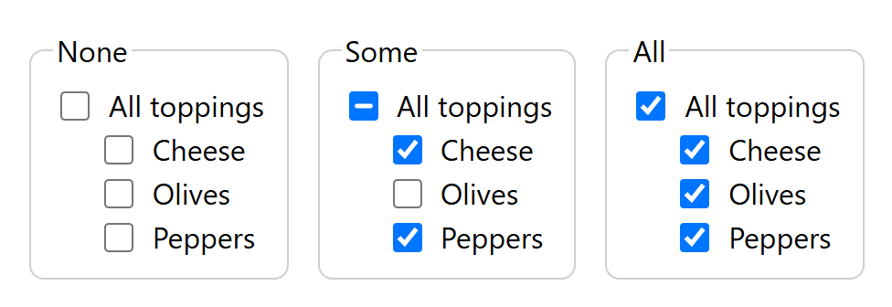
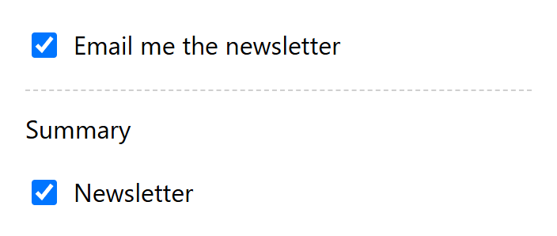

1. Introduction
This section is non-normative.
Lists of checkboxes often start with one that stands for the whole list: "All toppings", "Select all
messages", "Every day of the week". That checkbox has three looks. It’s unchecked when nothing in the
list is checked, checked when everything is, and indeterminate in between. Clicking it checks or
unchecks the whole list. HTML already has the indeterminate look, through the
indeterminate IDL attribute, but only script can set it, so every page that wants
this pattern writes the same event listeners.
Forms also sometimes show one choice in two places, such as a newsletter opt-in at the top of a long form and again in its summary. The two copies need to stay in step.
The relation attribute lets authors declare both patterns. It relates checkboxes the same way
HTML already relates radio buttons: by their shared name.
< fieldset > < legend > Toppings</ legend > < label >< input type = "checkbox" name = "toppings" value = "all" relation = "parent" > All toppings</ label > < label >< input type = "checkbox" name = "toppings" value = "cheese" > Cheese</ label > < label >< input type = "checkbox" name = "toppings" value = "olives" > Olives</ label > < label >< input type = "checkbox" name = "toppings" value = "peppers" > Peppers</ label > </ fieldset >
"All toppings" is the parent, and the other three are its children. Checking Cheese makes "All toppings" indeterminate. Checking Olives and Peppers as well makes it checked. Clicking "All toppings" then unchecks all three.

< label >< input type = "checkbox" name = "newsletter" value = "yes" relation = "linked" > Email me the newsletter</ label > …< label >< input type = "checkbox" name = "newsletter" value = "yes" relation = "linked" > Newsletter</ label >
Checking either checkbox checks the other.
User agents that don’t support this specification ignore the attribute. The checkboxes still work and submit as they do today; they just don’t update each other.
2. The relation attribute
2.1. The content attribute
The relation content attribute is an enumerated attribute with
the following keywords and states:
| Keyword | State | Brief description |
|---|---|---|
parent
| Parent | The checkbox checks and unchecks the other checkboxes in its group, and shows whether none, some, or all of them are checked. |
linked
| Linked | The checkbox and the other linked checkboxes in its group always change together. |
The attribute’s missing value default and invalid value default are both the None state, in which the attribute has no effect.
The attribute may be specified on input elements whose type attribute is in the
Checkbox state. On any other element, it does not apply and has no effect.
2.2. Checkbox groups
The checkbox group that contains an input element a also contains every other
input element b that fulfills all of the following conditions:
-
Either a and b have the same form owner, or they both have no form owner.
-
Both a and b are in the same tree.
-
They both have a
nameattribute, theirnameattributes are not empty, and the value of a’snameattribute is identical to the value of b’s.
Note: This is the same rule as a radio button group, applied to checkboxes. A checkbox with no
name, or an empty one, is in a group on its own.
The parent of a checkbox group is the first element, in
tree order, in the group whose relation attribute is in the Parent state. A
group has no parent if no element in it is in that state.
The children of a checkbox group that has a
parent are the elements in the group, other than the parent, whose
relation attribute is not in the Linked state.
The linked checkboxes of an element whose relation attribute is in the
Linked state are the other elements in its checkbox group whose relation
attribute is also in the Linked state.
A checkbox group must not contain more than one element whose relation attribute is in
the Parent state. User agents treat any such element after the first as one of the
children.
2.3. The IDL attribute
partial interface HTMLInputElement { [CEReactions ]attribute DOMString relation ; };
The relation IDL attribute must reflect the
relation content attribute, limited to only known values.
const all= form. querySelector( '[relation]' ); all. relation; // "parent" all. indeterminate; // true when some, but not all, toppings are checked // Feature detection. const supported= "relation" in HTMLInputElement. prototype;
3. Behavior
3.1. Updating the parent
-
Let parent be group’s parent.
-
Let count be the number of group’s children whose checkedness is true.
-
If count is the number of group’s children, then set parent’s checkedness to true and its
indeterminateIDL attribute to false. -
Otherwise, if count is 0, then set parent’s checkedness to false and its
indeterminateIDL attribute to false. -
Otherwise, set parent’s checkedness to false and its
indeterminateIDL attribute to true. -
Set parent’s dirty checkedness flag to true.
When any of the following occur, the user agent must update the parent of each affected checkbox group:
-
The checkedness of one of a group’s children changes, for any reason, except while the user agent runs propagate the checkedness.
-
The checkedness of a group’s parent is changed by its reset algorithm, or by the addition or removal of its
checkedcontent attribute. -
An element joins or leaves a group, or a group’s parent changes. For example, an element is inserted or removed; its
name,type,relation, orformattribute is set, changed, or removed; or its form owner changes.
checked content attribute
has no visible effect while it has children, and a form reset shows the state that the children’s
defaults give. An indeterminate parent has a checkedness of false, so it isn’t submitted.
3.2. Propagating the checkedness
input element element:
-
Let group be element’s checkbox group.
-
Let targets be an empty list.
-
If element is group’s parent, then set targets to group’s children.
-
Otherwise, if element’s
relationattribute is in the Linked state, then set targets to element’s linked checkboxes. -
For each target of targets:
-
Set target’s checkedness to element’s checkedness.
-
Set target’s
indeterminateIDL attribute to false. -
Set target’s dirty checkedness flag to true.
-
-
Update the parent of group.
The user agent must propagate the checkedness of an element when:
-
The user checks or unchecks it. See § 3.3 Changes to the Checkbox state’s activation behavior.
-
Script sets its
checkedIDL attribute. See § 3.4 Changes to the checked IDL attribute.
Note: Propagation doesn’t run when the form is reset, or when the checked content attribute
changes. Those restore each checkbox’s own default, and the parent is then updated from its children.
3.3. Changes to the Checkbox state’s activation behavior
The input activation behavior of an input element in the Checkbox state [HTML] is
changed as follows. Inserted text is
marked like this
.
-
If the element is not connected, then return.
- Propagate the checkedness of the element.
-
Fire an event named
inputat the element with thebubblesandcomposedattributes initialized to true. -
Fire an event named
changeat the element with thebubblesattribute initialized to true.
Note: The legacy-pre-activation behavior has already toggled the element’s checkedness and
cleared its indeterminate IDL attribute. Because the change happens in the
activation behavior, a click event listener that cancels the event stops the whole group
from changing. Listeners for input and change see the whole group already
updated.
3.4. Changes to the checked IDL attribute
The setter steps of the checked IDL attribute [HTML] are changed as follows:
On setting, it must set the element’s checkedness to the new value and set the element’s
dirty checkedness flag to true
, and then, if the element’s type attribute is in
the Checkbox state, propagate the checkedness of the element
.
Note: Setting checked propagates even when the value doesn’t change. Setting
checked = true on an indeterminate parent checks every child.
3.5. Interaction with other features
This section is non-normative.
- Events
-
Only the checkbox the user clicked fires
inputandchange. The checkboxes it changes don’t, just as a radio button that is unchecked because another one was checked doesn’t. - Form submission
-
Nothing changes. Each checked checkbox submits its own entry, including the parent and every linked checkbox. Authors can give the parent a value such as
allthat the server ignores. indeterminate-
Script can still set it, but the next change in the group replaces it.
disabled-
Disabled children are checked and unchecked along with the rest, and count toward the parent’s state. A disabled parent can’t be clicked, but it still shows its children’s state.
- Constraint validation
-
requiredon a checkbox checks that checkbox alone, as it does today.
4. Changes to the HTML Standard
To integrate this specification into the HTML Standard [HTML], make these changes:
-
In the Checkbox state, add the definitions in § 2 The relation attribute and § 3.1 Updating the parent, and apply the change in § 3.3 Changes to the Checkbox state’s activation behavior.
-
Apply the change in § 3.4 Changes to the checked IDL attribute.
-
In the index of element attributes, add a row: attribute
relation; elementinput; description "Relates checkboxes that share a name"; value "parent;linked".
5. Accessibility considerations
The user agent sets the parent’s indeterminate state itself, so assistive technologies announce it
as "mixed" or "partially checked", the same as when script sets
indeterminate today. They don’t announce the checkboxes that change as a
result of a click, so authors should make the relationship clear in the labels, for example "All
toppings", and should put the parent first, with its children grouped under it in a fieldset
with a legend.
Linked checkboxes are separate controls, so screen reader users meet each one. Each needs a label that makes sense on its own.
6. Security and privacy considerations
-
This specification exposes no new information. It only changes the state of checkboxes on the same page, in the same form, with the same name.
-
The attribute can’t run script, fetch resources, or reach controls in another document or shadow tree.
-
Servers must not assume the submitted checkboxes are consistent. User agents without support, and clients that aren’t browsers, submit whatever they like.
7. More examples
This section is non-normative.
< form action = "/signup" > < label >< input type = "checkbox" name = "newsletter" value = "yes" relation = "linked" > Email me the newsletter</ label > …< h2 > Summary</ h2 > < label >< input type = "checkbox" name = "newsletter" value = "yes" relation = "linked" > Newsletter</ label > < button > Sign up</ button > </ form >

When both are checked, the form submits newsletter=yes&newsletter=yes. Servers
that read a single value get yes either way.
form attribute puts them all in the same form, and so in the same group, wherever they
are in the table.
< form id = "inbox" action = "/archive" method = "post" ></ form > < table > < tr >< th >< input type = "checkbox" form = "inbox" name = "message" value = "all" relation = "parent" aria-label = "Select all messages" > < th > From< th > Subject< tr >< td >< input type = "checkbox" form = "inbox" name = "message" value = "1041" aria-label = "Select message from Ana" > < td > Ana< td > Lunch?< tr >< td >< input type = "checkbox" form = "inbox" name = "message" value = "1042" aria-label = "Select message from Ben" > < td > Ben< td > Build report</ table > < button form = "inbox" > Archive</ button >
8. Alternate proposals
This section is non-normative.
8.1. Naming the parent by ID
Instead of relating checkboxes by name, each child could point at its parent, as in
<input type="checkbox" parent="all-toppings">. That would allow nesting, where a
parent is itself the child of another parent, and it would let children have different names. But
it needs an ID on every parent and an attribute on every child, and IDs don’t work across shadow
trees. Relating by name matches radio buttons and needs one attribute for the common case.
8.2. Script
Authors can already do this with input event listeners and the
indeterminate IDL attribute, as the polyfill does. It has to be written, and
tested, for every page. It also has to watch for checkboxes being added, removed, and reset, and it
doesn’t work when script is turned off.
9. Open issues
Attribute name. Alternatives include checkboxgroup,
group, and role-like keywords such as selectall and
mirror.
Events on the changed checkboxes. Should the checkboxes that the user agent
changes also fire input and change? Radio buttons don’t, but authors may
have change listeners on individual children.
Disabled children. Should a parent skip disabled children, both when it checks them and when it counts them?
Submitting the parent. Should the parent be left out of the form’s entry list, since its value only summarizes its children?
Nesting. A checkbox has one name, so it can’t be the parent of one group and a child of another. Should nested trees of checkboxes be supported, for example with § 8.1 Naming the parent by ID?
Linked checkboxes that disagree. Linked checkboxes that start with different
checked attributes, or that are added to a group later, stay out of step until one of them
changes. Should the user agent bring them into step, and if so, from which checkbox?